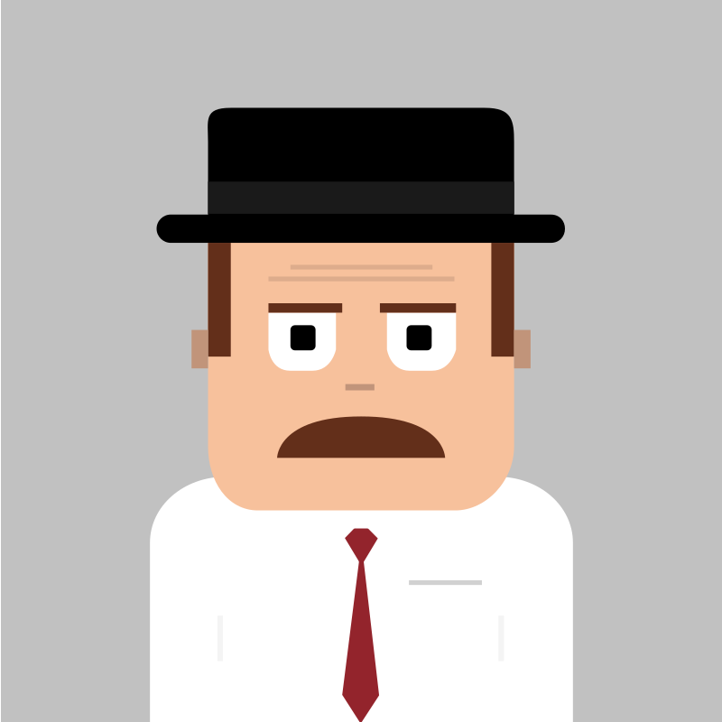

Message DadBot on Facebook
Hi Internet. I'm Dadbot.
I'm a fun, easy to use Facebook Messenger bot who lives right on your desktop or mobile phone. I'm available 24/7, 365 days a year to provide you with an endless amount of dad jokes.